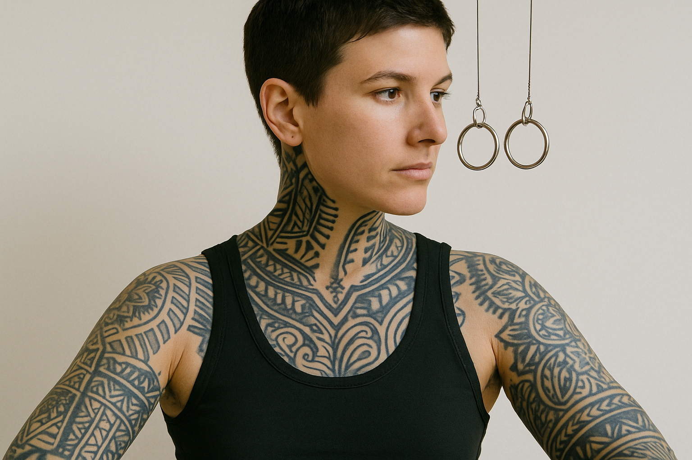
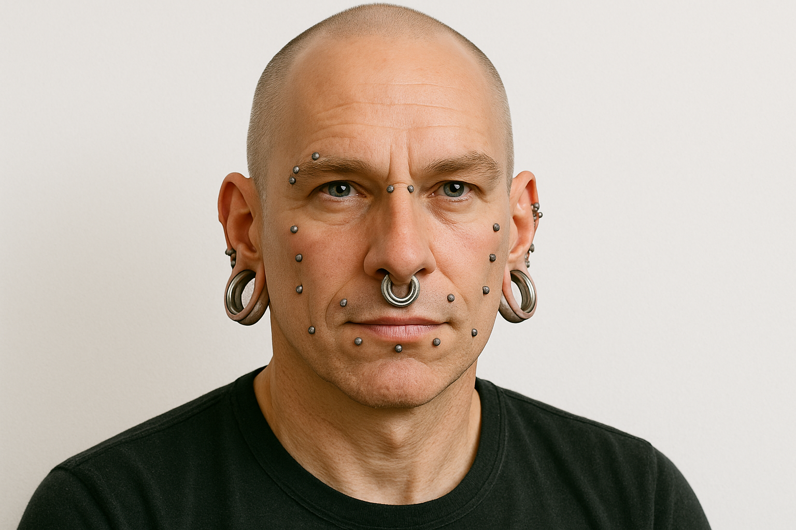
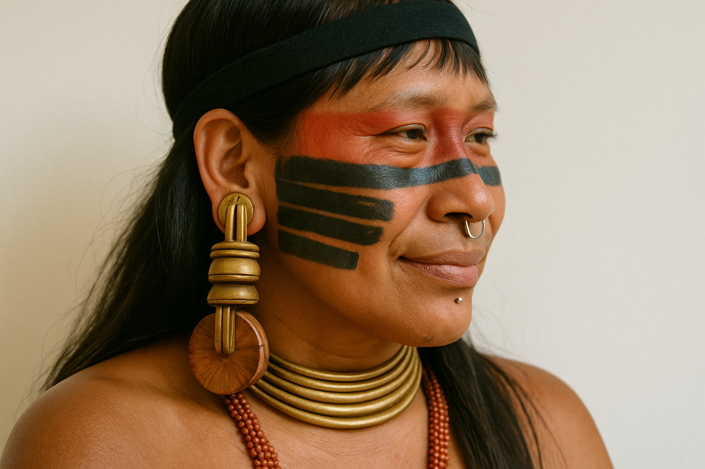
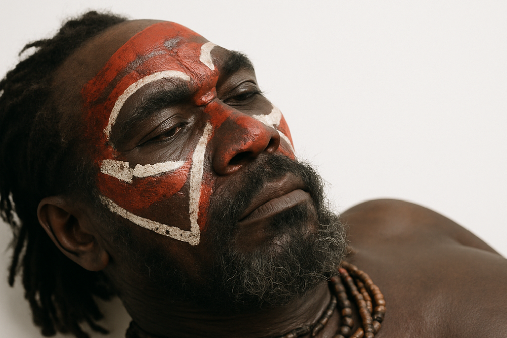
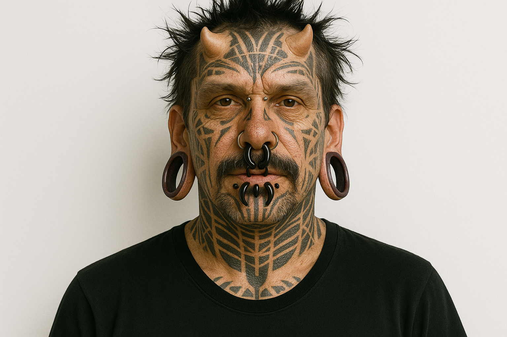
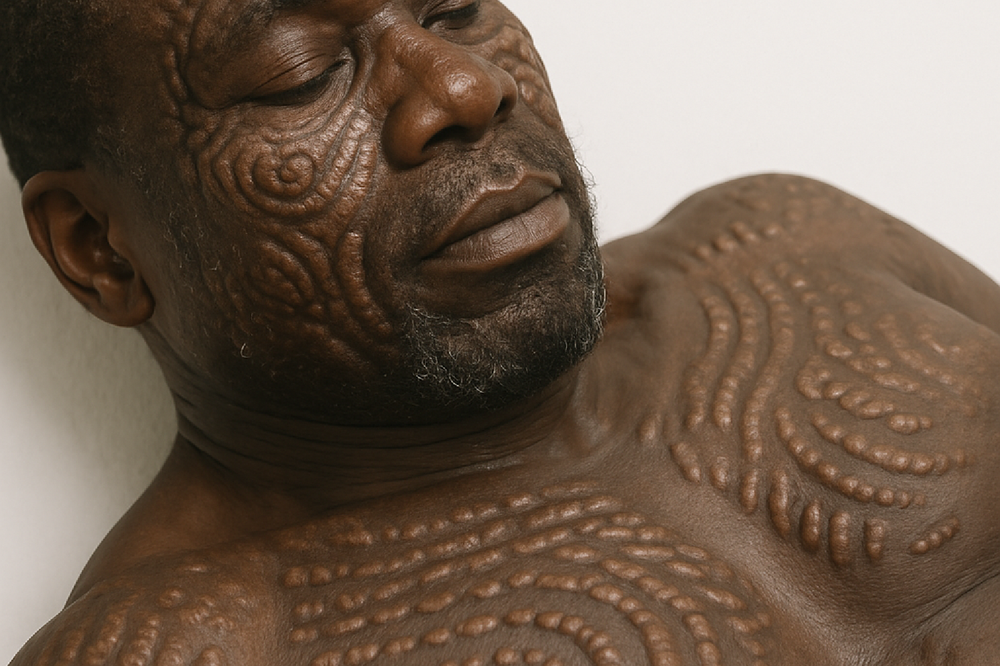
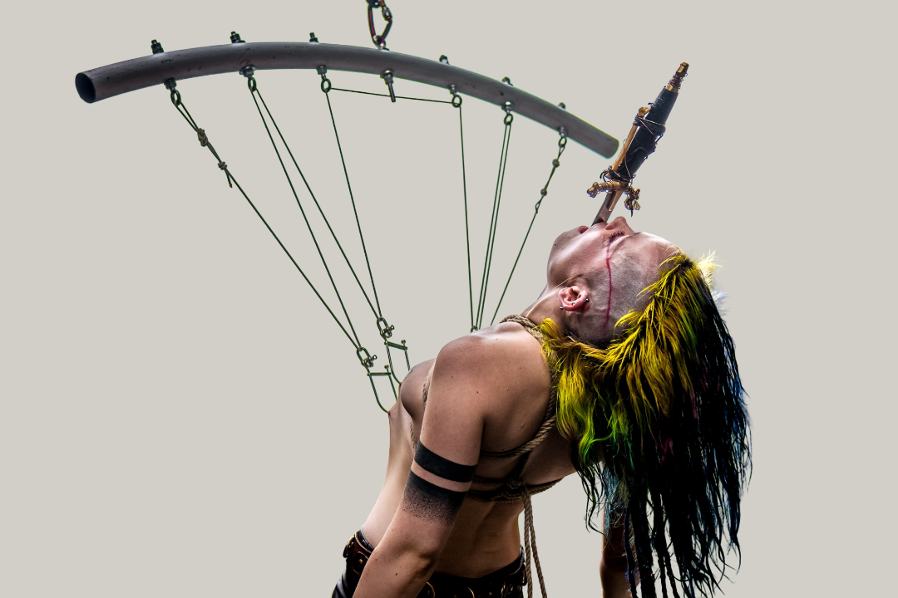

COMO SURGIU
A história da modificação corporal é tão antiga quanto a própria humanidade, com registros que remontam a mais de 5.000 anos. Suas raízes surgiram de forma independente em diferentes civilizações, cada uma desenvolvendo suas próprias práticas com significados culturais, religiosos ou sociais profundos.
Durante a Antiguidade, as modificações corporais ganharam funções específicas em diferentes civilizações. No Japão feudal, os Ainu usavam tatuagens faciais para afastar males, enquanto na América Pré-Colombiana, maias e astecas perfuravam línguas e genitais em cultos aos deuses.
A modernidade transformou a modificação corporal em fenômeno global, mesclando tradição e tecnologia. Hoje, enquanto tribos urbanas mantêm vivas práticas como o alargamento de orelhas, a medicina desenvolve implantes subdérmicos e alongamentos ósseos controlados.
TIPOS DE MODIFICAÇÃO CORPORAL

TATUAGEM
Arte milenar, onde pigmentos são inseridos na pele para criar desenhos permanentes. Pode ter significados culturais, pessoais ou puramente estéticos. Os estilos variam desde tradicionais até realistas, exigindo cuidados pós-procedimento para evitar infecções.

PIERCINGS
Perfuração de partes do corpo para inserção de joias, como argolas ou barras. Popular em culturas antigas e modernas, pode ser aplicado em orelhas, nariz, umbigo ou áreas mais ousadas. A cicatrização deve ser rigorosa.

ALARGADORES
Usado para expandir gradualmente furos, principalmente em lóbulos das orelhas. Utiliza-se plugs ou tunnels de materiais como silicone ou madeira. O processo deixa a pele marcada permanentemente, e deve ser lento para evitar rupturas.

PINTURA
Arte que permite transformar a pele em tela sem comprometer sua estrutura. Usadas em rituais ancestrais e na moda contemporânea, essas técnicas destacam-se pela efemeridade ou durabilidade, dependendo dos pigmentos aplicados.

IMPLANTE
Arte que insere objetos sob a pele para criar relevos permanentes. Feitos de silicone ou metais biocompatíveis, exigem cirurgia precisa e cuidados pós-operatórios rigorosos para evitar rejeição ou infecções.

ESCARIFICAÇÃO
O processo ocorre através de cortes e ferimentos feitos na pele, criando desenhos e padrões. Essa prática é utilizada em diversas culturas para expressar status, identidade e ritos de passagem. As alterações são permanentemente.
ALONGAMENTO
Uma modificação extrema que transforma permanentemente o corpo. Diversas culturas, como os Padaung de Mianmar, expressam sua identidade através de anéis cervicais que alongam o pescoço. Na sociedade moderna, esse processo ocorre por meio de procedimentos cirúrgicos especializados.
